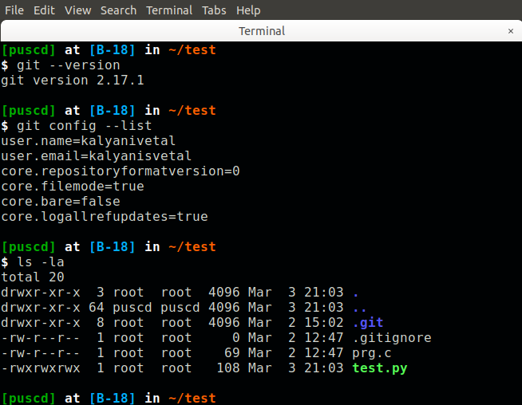
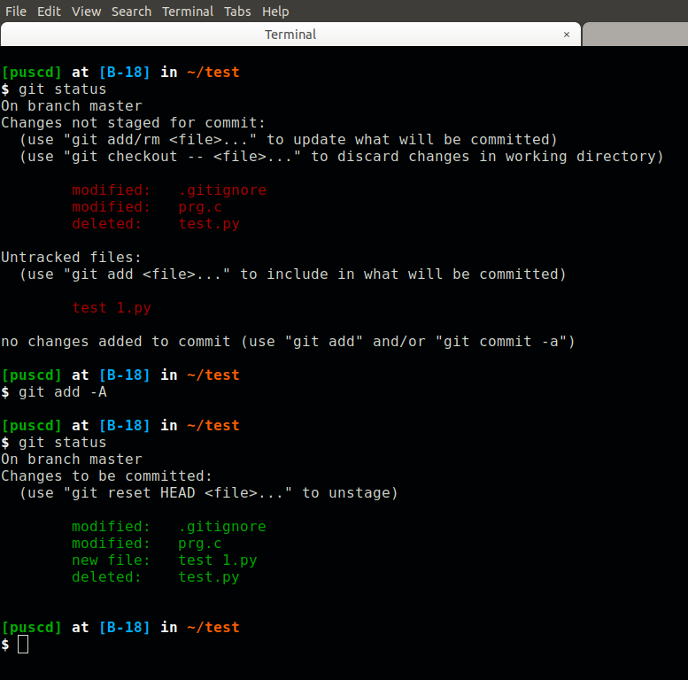
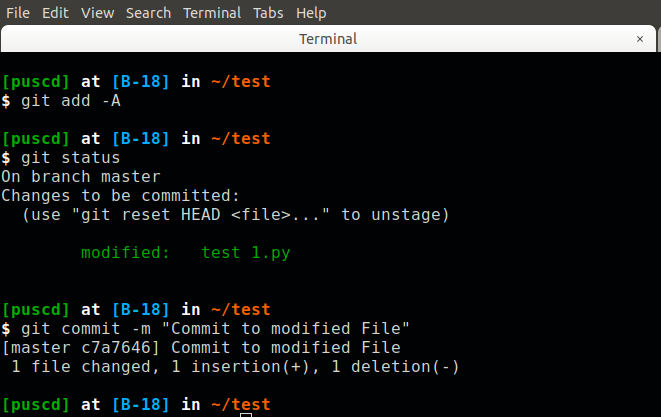
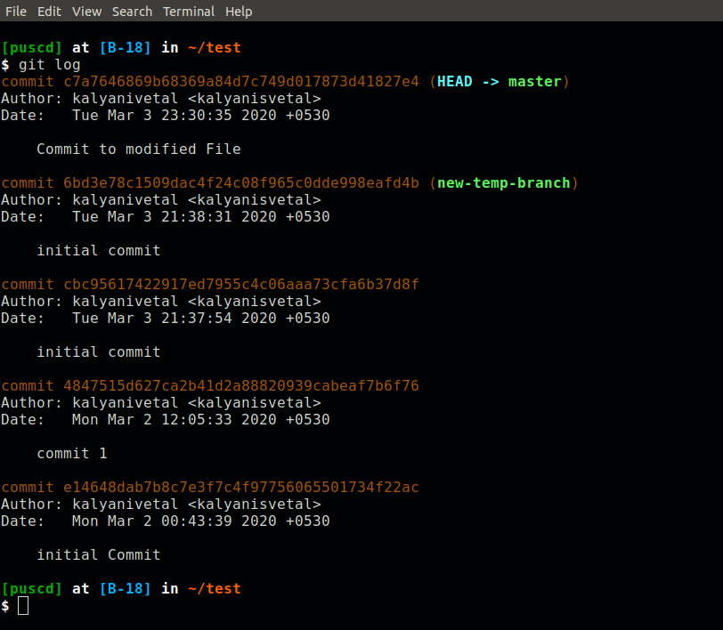
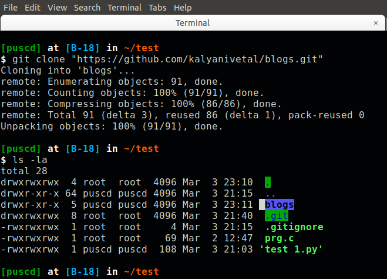
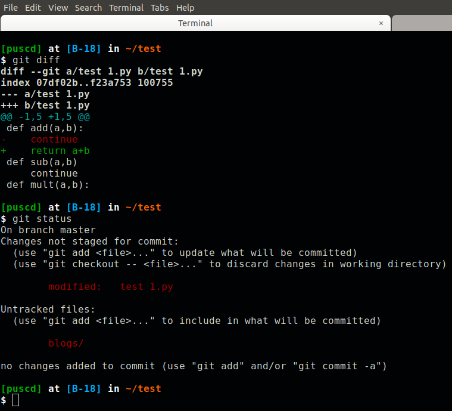
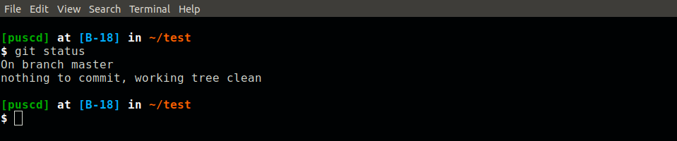
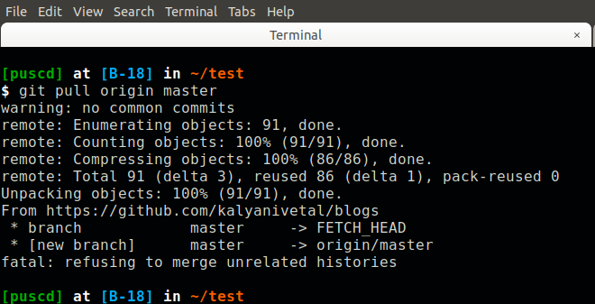

Git-Command Line Interface

Git is OpenSource. Everyone can use or contribute over it. Whether you are developing in Ruby, JavaScript, Python or any other language, a good Version Control workflow is essential and GitHub makes implementing that workflow easier by giving developers great tools with which to work.
Let's start then.
You need to make sure that git is installed. Use: apt-get install git
Check git version. Use the command : git --version
You need to add global variables so that other users will who is goig to check-in and check-out over it.
Use the commands: git config --global user.name "your_name"
and for email use: git config --gloabl user.email "youremail@__.com"
To view your configurations on machines use: git config --list
Before proceeding make sure that you have user name and user email is set.
To keep track of our Project .git directory is there in local repository.
Use: git status

To check status of local repository and checks it with remote repository. test1.py is created for example purpose.
Sometimes you don't want some files for other users to see or to ignore those files while adding all other files to git. Hence for this purpose .gitignore file is used to add such files that we want to ignore while adding other files to repository.
Now if you see I have added .c files to .gitinore file. Let's see what happens when you add this files to git.
Now there 3 areas in git. 1)Working dir 2)Staging Area 3).git Repository
After adding files, now files are in staging area. We need to commit those files to git providing commit message to understand what we commit or what we added to our repository. To add files: git add -A, -A is for adding all files from local repository to staging area.
If you want to remove files from staging area then use: git reset filename
If you check now there are no files in the staging area. All files have been added to remote repository.

You can check your all commits using git log

Now if we want to use any remote repository to work on your local machine you can add by:
git clone "URL"
e.g: git clone "https://github.com/repository.git"

Now you need to check on which branch you are working because you can connit though master branch only which has remote access to repository. To check branch Use: git branch
To list out all branches use: git branch -a
Now what if we have changed a file and we have to push those changes that I have made in local repository to remote repository. How you will know about if you have chnaged many files and now out of that what if you have to upload only few files. Well if you type git diff you will get to see the changes you have to any of the files.
Now we are going to add those files again and check status you will see that your changes has to be committed. After you commit check git status and you will see that there's nothing to commit.
Now you have to push these changes so before push what if someone else was already working on the same project and that person has modified the same files you have modified? so for that first you need to pull those changes first by git pull origin master
 and then push your changes git push origin master
Now git status and check there's nothing to commit :)
And that's all for the day.
Hope you guys liked this and that's all for beginning with Command Line Interface for git. In next blog we are going to learn about git-branch and moving from one branch to another branch, commiting to branch, merging branch any many more stuff.
See you then.. :)
Thank You.